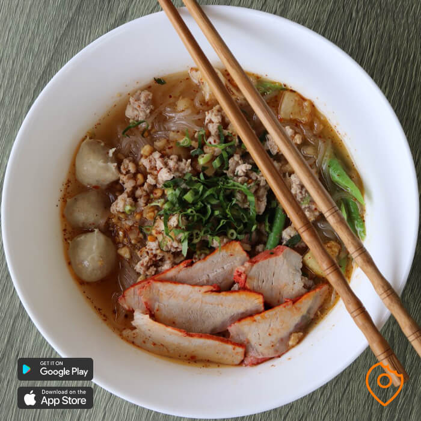

| 1. Sukhothai Old City |
| This UNESCO World Heritage site stands as a testament to Thailand's storied and colorful past and it should be your first place to visit on a trip to Sukhothai. Nearly 200 temples were excavated and partly reconstructed here, providing visitors with a chance to get a unique look at what Thailand's early capital might have been like.
In the city's heyday, three earthen walls and two moats surrounded the old center. Twenty-one wats and four ponds were uncovered during excavations. This was the cradle of Thai culture, and archaeologists have found the remnants of artistic and religious works that would define a society for centuries.
Foreign visitors will find here an information center detailing Sukhothai activities and self-guided tours, plus display boards in English outside every building. |
 |
| 2. Wat Traphang Thong Lang |
| Wat Traphang Thong (also known as "the Temple of the Coral Pond") sits on its own island in the complex, and it's only accessible via a bridge. Although much of the stucco on the temple walls has been heavily damaged, the square temple still sits magnificently high on a platform and overlooks the park.
The flat relief on the southern side shows Buddha, striding over steps. Protected by two parasols, Buddha is accompanied by the Hindu goddesses Indra and Brahma, as well as by worshippers. This is assumed to be the first visual representation of a stepping Buddha from the Sukhothai period. On the north side, a relief depicts Buddha taming the elephant Nalagiri, which his cousin Devadatta had set upon him. |
 |
| 3. Wat Maha |
| After spending the first evening exploring the surrounding old town area, it is time to explore Sukhothai Historical Park. Sukhothai Historical Park gets a ton of tourists during the day so I would recommend you go as early as 6:30 AM to beat the crowds.First things first, you will have to rent a bike to explore Sukhothai Historical Park. I went with OR Shop just in front of the historical park and I rented a bike for a day for 30 THB. Once you have your bike, go and buy the ticket to enter the historical park.
You will have to pay for the entrance fee as well as for the bike which should cost 100 THB (20 THB for Thais) plus 10 THB respectively. Once you got your ticket from the ticket booth, enter the park and head towards Wat Maha That, the largest ruin complex in the park just west from the gate. |
 |
| 4. Wat Traphang Ngoen |
| From Wat Si Sawai, ride back up to Wat Maha That but instead of turning right, go left towards the Silver Lake and you will find Wat Traphang Ngoen, a small Sukhothai-era temple with a great view of the Silver Lake near it.
The temple itself which was built in the 14th Century is not as impressive as all the others but due to its location by the lake, especially in the early morning, you should be able to capture some dreamy landscapes of the lake as well as the silhouette of the other temples from Wat Traphang Ngoen. |
 |
| 5. Si Satchanalai Historical Park |
| Si Satchanalai is the twin ancient city of Sukhothai with a ton of old ruins and temples in its own caliber that you should check out if you have an extra day at Sukhothai.The journey with public transport will take you the entire day where you start at 7 AM from Sukhothai Old town and arrive back at 6 PM with around 3 - 4 hours of time for you to explore Si Satchanalai Historical Park on a bike.
ne of the first places you will visit is Wat Phra Sri, a 12th Century temple that is still currently active today. The temple is actually outside of Si Satchanalai Historical Park but it is one of the oldest in the area. You can clearly see it from the Khmer-style prang that you can climb up to, just like the Angkor Wat.From Wat Phra Sri, you will have to cycle for about 20 minutes to get to Si Satchanalai Historical Park. |
|
| 1. Sukhothai Noodle Soup. |
When you are planning to eat Sukhothai Noodles, you should visit the restaurant that serves the most delicious version in the city. When you ask Sukhothai citizens where to find the best Sukhothai Noodles, the majority will point you to Ta Puy Noodle. This hugely popular local eatery is located on the twelve kilometres road that connects New Sukhothai with Old Sukhothai, so it’s a little bit difficult to reach if you don’t have your transportation. But we can assure you that it’s worth the trip. The noodle soup at Ta Puy Noodle has a distinctive red colour and is deliciously flavoured. Sukhothai Noodles are slightly sweeter and sourer than standard Thai noodles and are served with green beans and thinly sliced roasted pork. There are a handful of other food options available at Ta Puy as well, such as Pad Thai, Satay and Sukhothai Noodles Dry, however, the main attraction is the Sukhothai Noodle Soup |
 |
| 2. Pad Ped Pla. |
Lung Choi is a popular Thai restaurant near the new city centre for both foreigners as locals. But the restaurant has two different menus, one is focussed for the western taste palate, the other one for the Thai taste palate. The western menu is not as interesting as the Thai menu as it offers mainly very common dishes such as fried rice, pad Thai and chicken cashew nuts. But we are here to help you to find exciting dishes, so we recommend you to order the Pad Pad Pla (140 THB), which is authentically spiced and packed with flavours. If you can handle a big of spiciness, Lung Choi is a very interesting restaurant to visit. Other highly recommended Sukhothai foods are Son Zhab Kai. |
 |
| 3. Deep-Fried Ruby Fish with Herbs. |
This restaurant is perfect for an entertaining evening while enjoying seriously tasty Thai food. At Ban Mi Hom HUG Sukhothai, there is live-music performance while you can enjoy a small selection of Thai food and some ice-cold beers. The absolute highlight of the menu was is the Deep-Fried Ruby Fish with Herbs, which is a filleted ruby fish, deep-fried and covered in all sorts of herbs such as chilli, garlic and ginger. As the fish is filleted, you won’t find any fishbone. Each bite with those herbs is a true flavour explosion in your mouth. |
 |
| 4. Khao Moo Grob. |
We discovered this local eatery by accident as we started noticing that every morning, Sukhothai citizens were waiting in line to get a seat at this place. This is always a good sign and we decided to check out what the fuzz was all about. It turns out that this place serves amazing Khao Moo Grob for a bargain at 30 THB per plate. Khao Moo Grob is a Chinese-influenced Thai dish that is made with crispy pork and covered in a thick, sweet gravy. The restaurant is open at 5:30 in the morning and from that moment on, hungry locals keep coming in. Another highly recommended dish at Obey Restaurant is their Khao Man Gai, which is steamed chicken with a spiced soy sauce. |
|
| 1. Get a History Lesson at Celadon Kiln Site and Study Center |
| Over 500 limestone kilns–as well as many celadon pots and wares–have been discovered in this area over the years, making this ancient site an important spot for pottery craftsmanship and production. Rather than moving the excavated pieces somewhere else, a center was built here to study and display them.
Check out the excavated pieces, then take in an exhibit of other ancient finds while learning about the crafting process inside the center. In addition to reconstructed pieces, you can also see here the ruins of the furnaces used to fire the pots. |
|
| 2. Visit the Boon Lott's Elephant Sanctuary |
| For something different to do when you need a break from history and ruins, this small, family-run rescue is a must-see. As the only local sanctuary focusing on helping abused elephants relearn social skills so they can live in a natural environment, this is a great alternative to other, more questionable elephant-related tourism.
British-born animal activist Katherine Connor founded Boon Lott's Elephant Sanctuary (BLES) to give elephants rescued from the tourist and logging trades a place to call home. Located not far outside the historical city of Sukhothai, BLES is a 540-acre animal reserve where things are done on "elephants' time."
There are no tours here or organized activities. Instead, visitors get to immerse themselves in a participative experience, walking the elephants to the grazing area or to swim in the river, helping plant or clear vegetation, and hiking with the mahouts to bring "wandering" elephants back from release sites and into the sanctuary. |
|
| 3. Saturday Night Market |
| When it comes to street food, Sukhothai does have a few street food vendors standing on the main road near the clock monument in the city centre of New Sukhothai. But for an abundance of delicious and cheap street food, you must visit the Saturday Night Market which is open every Saturday (and on a handful of festivities during the year). Around five o’clock, the market is open for public at Nikorn Kasem Road, which is turned into a Walking Street. The market is about five hundred meters long and the majority of the vendors sell food. For the majority of the citizens, the Saturday Night Market is the place to be during each weekend.
|  |
| 4. Ramkhamhaeng National Park. |
| Ramkhamhaeng National Park lies in Ban Dan Lan Hoi, Khiri Mat and Mueang Sukhothai districts of Sukhothai Province, the north of Thailand.
The majority of the park's land is within the contours of the Khao Luang Mountain Range.[1] This mountain range describes a north–south axis. Khao Luang is like a giant hill in the middle of a rice field, for it is surrounded by low farmland. The notable topography of this park are the four main peaks of the Khao Luang Range: Khao Phu Kha, Khao Phra Mae Ya, Khao Chedi, and Khao Pha Narai. The waters of the mountain range are essential to the agricultural lands below. These waters, Khlong Ta Chek, Khlong Sao Ho, Khlong Wang Ngen, Khlong Noen Khli, Khlong Duang Ngam, Khlong Lan Thong, Khlong Masang, and Khong Phetchahueng are also tributaries of the Yom River to the east, and the Ping River in the west. |
 |